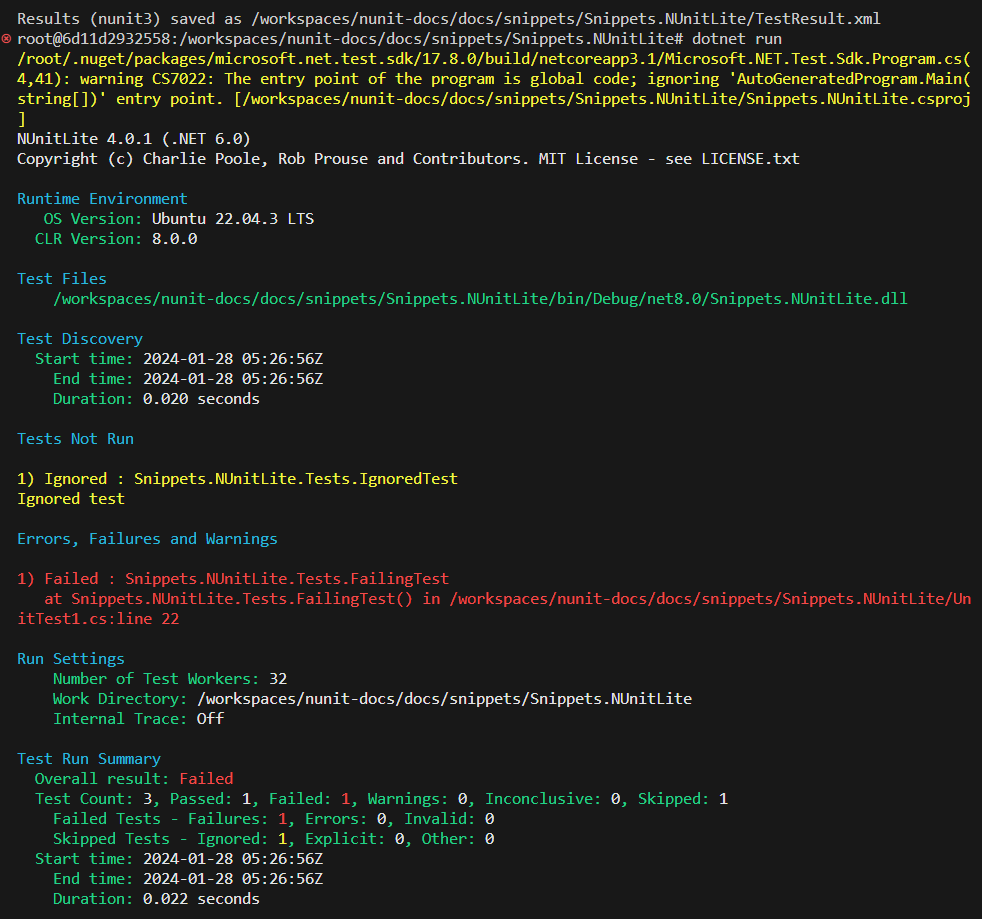

NUnite Lite Runner
NUnitLite started out life as a separate version of the NUnit framework, with fewer features and a built-in test runner. It ran on devices as well as on desktop .NET and mono and allowed users to create executable tests without the overhead of a full NUnit installation.
With NUnit 3.0, the NUnitLite framework has been merged with the full NUnit framework. There is now only one framework, nunit.framework.dll. The built-in runner, which was a part of the old NUnitLite, is now packaged as nunitlite.dll.
Using NUnitLite
To run tests under NUnitLite, proceed as follows:
Create a console application to use as your test assembly. If you have already placed tests in a dll, you can change the project so that it produces a console application and reload it.
Make sure your test assembly references both nunit.framework and nunitlite.
The Main() for your console application should look something like this...
public static int Main(string[] args)
{
return new AutoRun().Execute(args);
}
- Execute your test application in order to run the tests.
If you install the NUnitLite runner via the NuGet package, steps 2 is handled automatically. Both assemblies are installed and referenced for you.
In addition, if you are using C#, step 3 is handled as well. A file, Program.cs, is added to your project with a Main() like that above.
Note
If you are not working in C#, you should delete the Program.cs file that the NuGet package added to your test project.
NUnitLite Output
As seen in the following screen shot, the output from an NUnitLite run is quite similar to that from the console runner.
